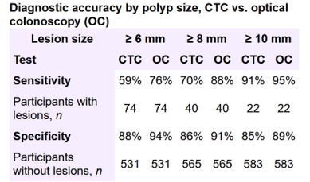

Electronic Cleansing in CT Colonography
Electronic cleansing (EC), aka digital bowel cleansing, is a process for identifying the tagged fecal materials, and subtract them from CTC images to “virtually cleanse” the colon in CT colonography (CTC).
Structure-analysis Cleansing
We developed a structure-analysis cleansing (SA-cleansing) method by using local morphologic features represented by the eigenvalue signatures of a Hessian matrix.
- Submerged folds and polyps are enhanced using morphologic (polyp and fold) enhancement functions.
- Submerged colonic structures are restored by their enhancements while tagged regions are removed.
 |
 |
Mosaic Decomposition Cleansing
We developed a mosaic decomposition (MD) cleansing method for subtraction of inhomogeneously tagged solid or semi-solid fecal residuals in non-cathartic CTC images.
- Decompose the colonic region into a set of local homogeneous regions, called tiles.
- Calculate a soft-tissue index using an SVM classifier based on the texture and morphological features of a tile.
- Preserve the tiles with a high soft-tissue index and remove those with a low soft-tissue index.
Virtual Colon Tagging
We developed a Virtual Colon Tagging (VCT) method in dual-energy CT colonography by using the three-material decomposition in DE-CTC images for minimizing EC artifacts:
- Virtually elevates the CT value of luminal air as high as that of the tagged fecal materials for virtually tagging the entire colonic lumen.
- Reduce the EC artifacts caused by partial volume effect at air-tagging boundary and in inhomogeneous tagging region (e.g. submerged air bubbles).
Non-Cathartic CT colonography
We conducted the first multicenter prospective clinical trial: “Non-Cathartic CT colonography” (ClinicalTrials.gov registration number: NCT01200303), which had recruited 653 subjects who underwent both ncCTC examination and OC. We had applied our EC method in this trial.
|  |
Non-cathartic, sub-mSv, dual-energy CTC
We developed a ultra-low dose, non-cathartic dual-energy CT CT colonography for colon cancer screening:
- Non-cathartic CTC: eliminate patients' concern of cathartic bowel preparation in CTC examination.
- Sub-mSv CTC: reduce the radiation dose to less than 1 mSv, as colon is one of five most radiosensitive organs.
Effective Dose = 41 × 0.015 = 0.615 mSv |
Effective Dose = 44 × 0.015 = 0.66 mSv |